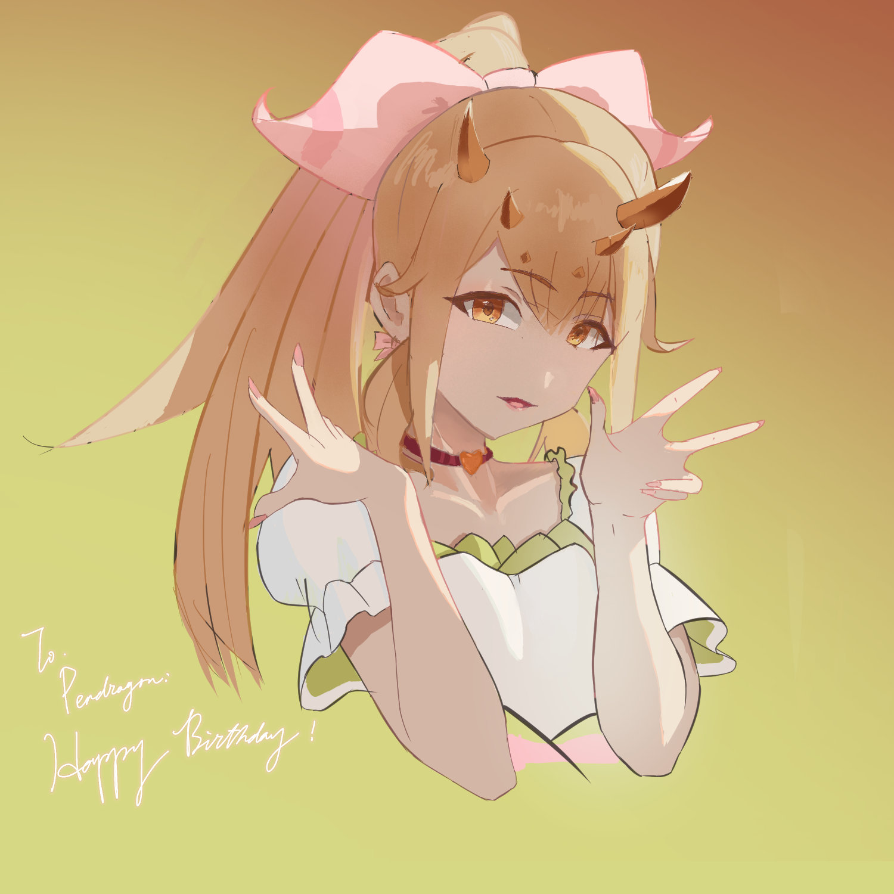
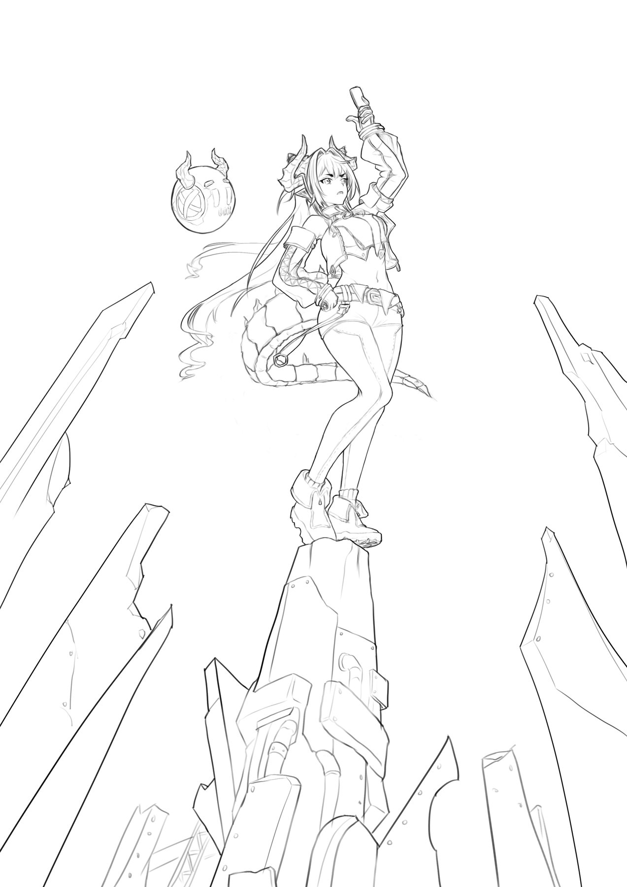
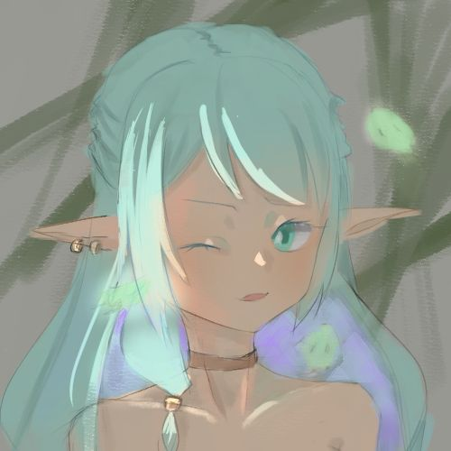
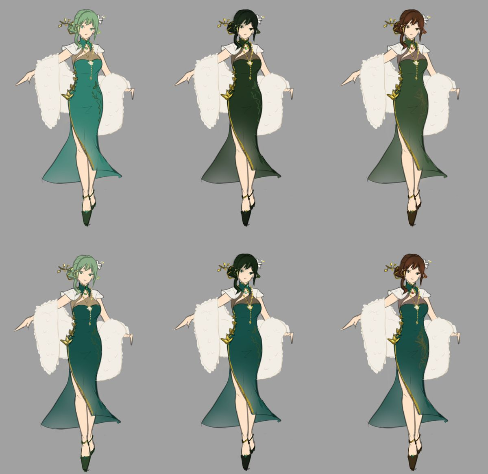
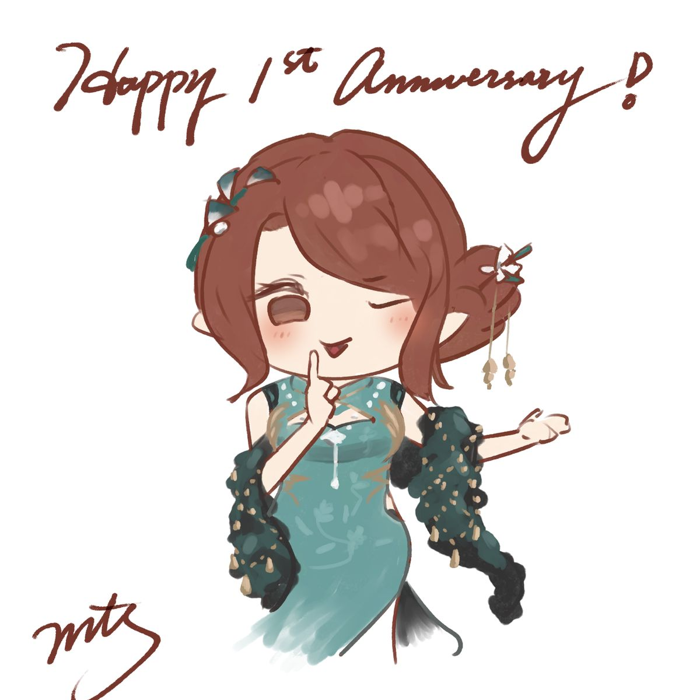
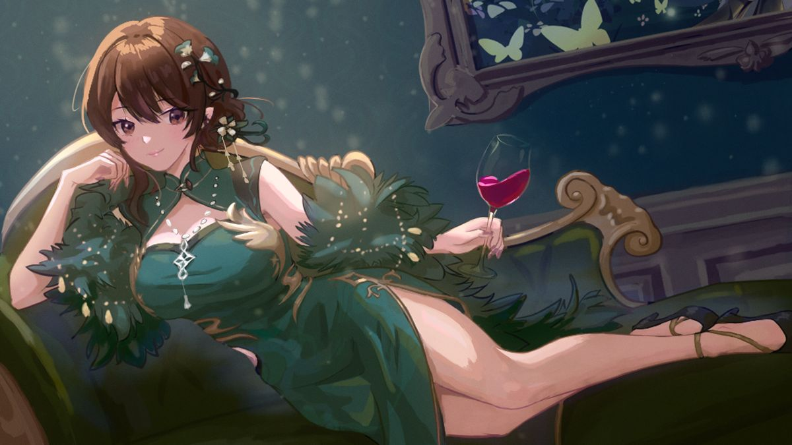
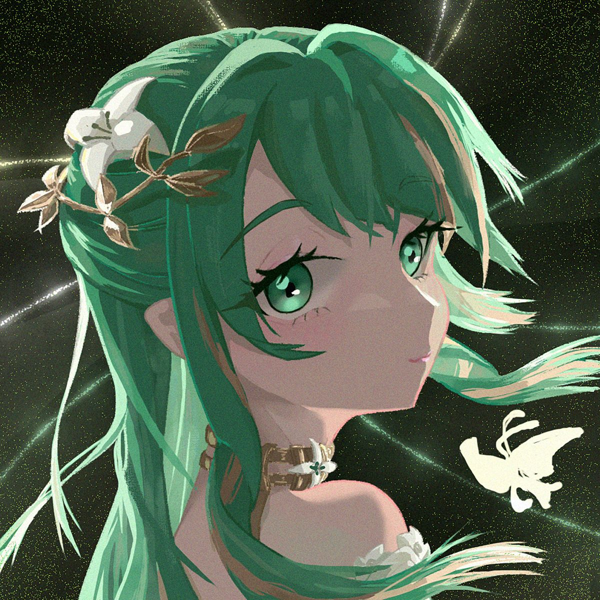
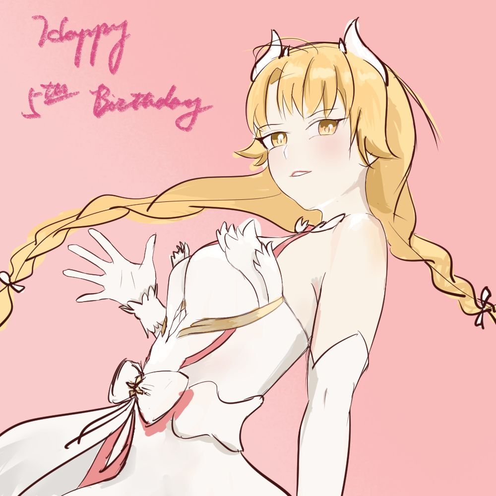
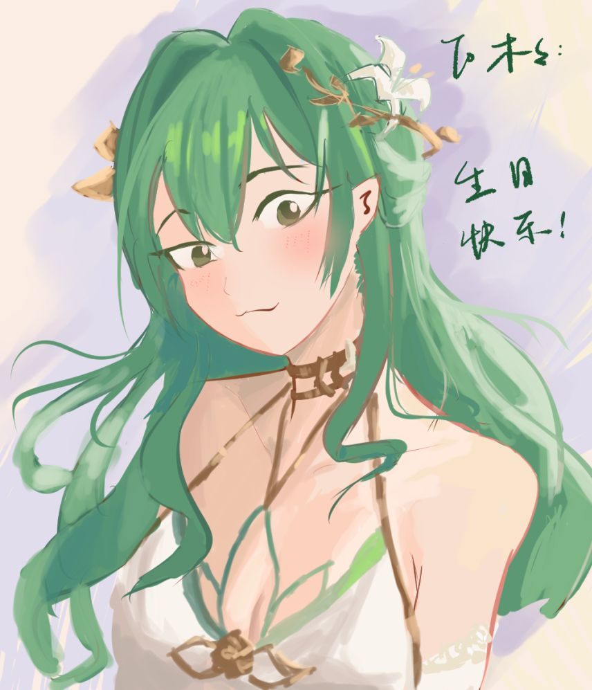

Digital Art
Sketches, Character Design & Paintings
A selection of digital drawings: line art and timed studies, character design, and finished paintings.


Sketches
Line art and a 60-minute colour study.


Character design
An outfit sheet in six colourways, and a chibi drawing in the same outfit.




Paintings
A first-anniversary illustration, an avatar, and birthday paintings done in two to three hours each.